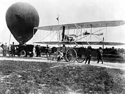

Early Aviation & Flight
Era: 1903 – 1940s
The Wright brothers' first powered flight in 1903 lasted just 12 seconds and covered roughly 36 meters, shorter than the wingspan of many modern commercial jets. Yet within just over a decade, airplanes were being used in World War I for reconnaissance and combat, and within 40 years, transatlantic commercial flight had become a genuine reality, representing one of the fastest transformations from experimental novelty to global infrastructure in technological history.
Type: Early Aviation Technology